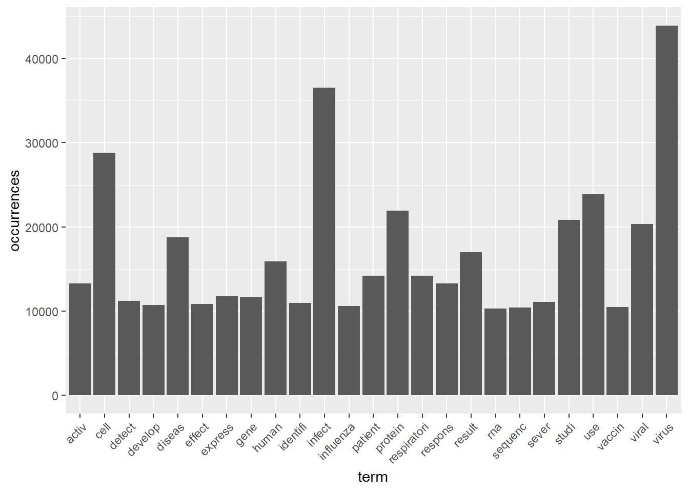
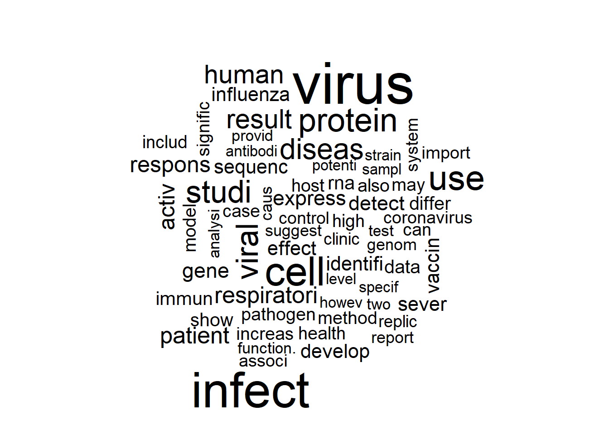
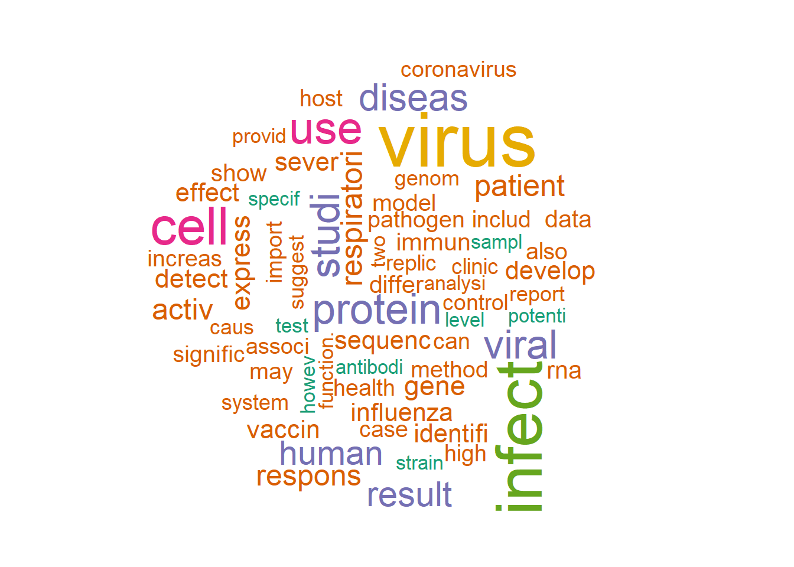

4.13 Text mining
2020-05-19
all code from the professor
Loading data
library("tm")
library("SnowballC")
library("readr")
library("dplyr")
t1 <- read_csv("2.UploadedData/all_sources_metadata_2020-03-13.csv")
glimpse(t1) ## Rows: 29,500
## Columns: 14
## $ sha <chr> "c630ebcdf30652f0422c3ec12a00b50241dc...
## $ source_x <chr> "CZI", "CZI", "CZI", "CZI", "CZI", "C...
## $ title <chr> "Angiotensin-converting enzyme 2 (ACE...
## $ doi <chr> "10.1007/s00134-020-05985-9", "10.103...
## $ pmcid <lgl> NA, NA, NA, NA, NA, NA, NA, NA, NA, N...
## $ pubmed_id <dbl> 32125455, NA, NA, 32093211, 32125453,...
## $ license <chr> "cc-by-nc", "cc-by", "cc-by", "cc-by"...
## $ abstract <chr> NA, NA, "The geographic spread of 201...
## $ publish_time <dbl> 2020, 2020, 2020, 2020, 2020, 2020, 2...
## $ authors <chr> "Zhang, Haibo; Penninger, Josef M.; L...
## $ journal <chr> "Intensive Care Med", "Cell Discovery...
## $ `Microsoft Academic Paper ID` <dbl> 2002765492, 3003430844, 3006065484, 1...
## $ `WHO #Covidence` <chr> "#3252", "#1861", "#1043", "#1999", "...
## $ has_full_text <lgl> TRUE, TRUE, TRUE, TRUE, FALSE, TRUE, ...4.13.1 Preprocessing
Create the text corpus
## $content
## [1] "The geographic spread of 2019 novel coronavirus (COVID-19) infections from the epicenter of Wuhan, China, has provided an opportunity to study the natural history of the recently emerged virus. Using publicly available event-date data from the ongoing epidemic, the present study investigated the incubation period and other time intervals that govern the epidemiological dynamics of COVID-19 infections. Our results show that the incubation period falls within the range of 2–14 days with 95% confidence and has a mean of around 5 days when approximated using the best-fit lognormal distribution. The mean time from illness onset to hospital admission (for treatment and/or isolation) was estimated at 3–4 days without truncation and at 5–9 days when right truncated. Based on the 95th percentile estimate of the incubation period, we recommend that the length of quarantine should be at least 14 days. The median time delay of 13 days from illness onset to death (17 days with right truncation) should be considered when estimating the COVID-19 case fatality risk."## [1] "10.3390/jcm9020538"Conversion to lowercase
## $content
## [1] "the geographic spread of 2019 novel coronavirus (covid-19) infections from the epicenter of wuhan, china, has provided an opportunity to study the natural history of the recently emerged virus. using publicly available event-date data from the ongoing epidemic, the present study investigated the incubation period and other time intervals that govern the epidemiological dynamics of covid-19 infections. our results show that the incubation period falls within the range of 2–14 days with 95% confidence and has a mean of around 5 days when approximated using the best-fit lognormal distribution. the mean time from illness onset to hospital admission (for treatment and/or isolation) was estimated at 3–4 days without truncation and at 5–9 days when right truncated. based on the 95th percentile estimate of the incubation period, we recommend that the length of quarantine should be at least 14 days. the median time delay of 13 days from illness onset to death (17 days with right truncation) should be considered when estimating the covid-19 case fatality risk."Remove punctuation
## $content
## [1] "the geographic spread of 2019 novel coronavirus covid19 infections from the epicenter of wuhan china has provided an opportunity to study the natural history of the recently emerged virus using publicly available eventdate data from the ongoing epidemic the present study investigated the incubation period and other time intervals that govern the epidemiological dynamics of covid19 infections our results show that the incubation period falls within the range of 2ndash14 days with 95 confidence and has a mean of around 5 days when approximated using the bestfit lognormal distribution the mean time from illness onset to hospital admission for treatment andor isolation was estimated at 3ndash4 days without truncation and at 5ndash9 days when right truncated based on the 95th percentile estimate of the incubation period we recommend that the length of quarantine should be at least 14 days the median time delay of 13 days from illness onset to death 17 days with right truncation should be considered when estimating the covid19 case fatality risk"Remove stopwords
## $content
## [1] " geographic spread 2019 novel coronavirus covid19 infections epicenter wuhan china provided opportunity study natural history recently emerged virus using publicly available eventdate data ongoing epidemic present study investigated incubation period time intervals govern epidemiological dynamics covid19 infections results show incubation period falls within range 2ndash14 days 95 confidence mean around 5 days approximated using bestfit lognormal distribution mean time illness onset hospital admission treatment andor isolation estimated 3ndash4 days without truncation 5ndash9 days right truncated based 95th percentile estimate incubation period recommend length quarantine least 14 days median time delay 13 days illness onset death 17 days right truncation considered estimating covid19 case fatality risk"Stemming
## $content
## [1] "geograph spread 2019 novel coronavirus covid19 infect epicent wuhan china provid opportun studi natur histori recent emerg virus use public avail eventd data ongo epidem present studi investig incub period time interv govern epidemiolog dynam covid19 infect result show incub period fall within rang 2ndash14 day 95 confid mean around 5 day approxim use bestfit lognorm distribut mean time ill onset hospit admiss treatment andor isol estim 3ndash4 day without truncat 5ndash9 day right truncat base 95th percentil estim incub period recommend length quarantin least 14 day median time delay 13 day ill onset death 17 day right truncat consid estim covid19 case fatal risk"Create document term matrix
4.13.2 Representation
Find correlation between terms
## $quarantin
## measur complianc
## 0.13 0.11Find correlation between terms
## $treatment
## treat effect clinic patient young trial asthma min korean
## 0.27 0.26 0.24 0.23 0.23 0.22 0.22 0.22 0.20Convert the matrix into a data frame, a format widely used in ‘R’ for predictive modeling. Outcome will be the class
tSparse = as.data.frame(as.matrix(sparse))
colnames(tSparse) = make.names(colnames(tSparse))
tSparse$recommended_id = t2$source_x Histogram
wf=data.frame(term=colnames(tSparse[,-2250]),occurrences=colSums(Filter(is.numeric, tSparse)))
library(ggplot2)
p <- ggplot(subset(wf, colSums(Filter(is.numeric, tSparse))>10000), aes(term, occurrences))
p <- p + geom_bar(stat="identity")
p <- p + theme(axis.text.x=element_text(angle=45, hjust=1))
p
4.13.3 Discovery
wordcloud
library(wordcloud)
set.seed(42)
#limit words by specifying min frequency
wordcloud(colnames(tSparse[,-2250]),colSums(Filter(is.numeric, tSparse)), min.freq=7000)
wordcloud with colors
library(RColorBrewer)
wordcloud(colnames(tSparse[,-2250]),colSums(Filter(is.numeric, tSparse)), min.freq=7000, colors=brewer.pal(6,"Dark2"))
4.13.4 Output knowledge
Check the baseline accuracy (proportion of majority class)
| biorxiv | CZI | medrxiv | PMC |
|---|---|---|---|
| 0.0210339 | 0.0315136 | 0.0132298 | 0.9342228 |
continue for the random forest algorithm